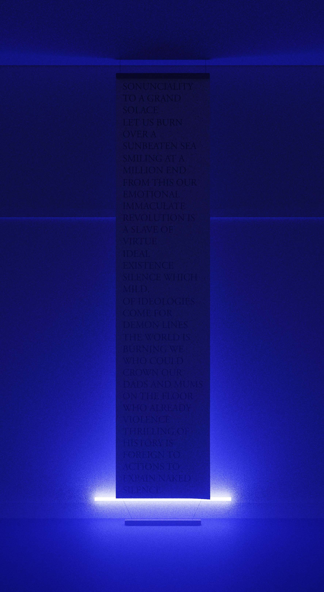

-
- ../2022/I’M NOT WRITING TO GET LAID, OR EVEN
TO PASS THE TIME, OR TO GET WELL KNOWN.
I NEED PEOPLE, OR I’M NOT WRITING. I NEED
A POET WITH A NAME, RECOGNITION, AND A
POEM TO STAND ON
- printed text on paper
- This work is a proclamation of my method, to present and celebrate the futility of writing the non-
meaning. Statements are printed large so they can be read, for there is semantic meaning But remove
semantics and the pragmatics of a large text print
becomes pointless. The scroll consists of meaningless,
grandiose, pseudoprofound texts, and the occasional
word-formation and is hung explicitly with a light
shining from below.
